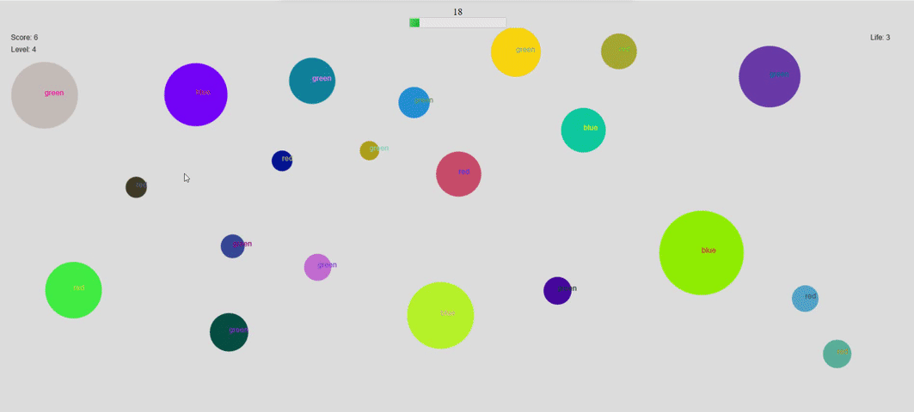

Rules
The goal of this game is to click on the shape corresponding to the given description within the time limit.
The goal of this game is to click on the shape corresponding to the given description within the time limit.